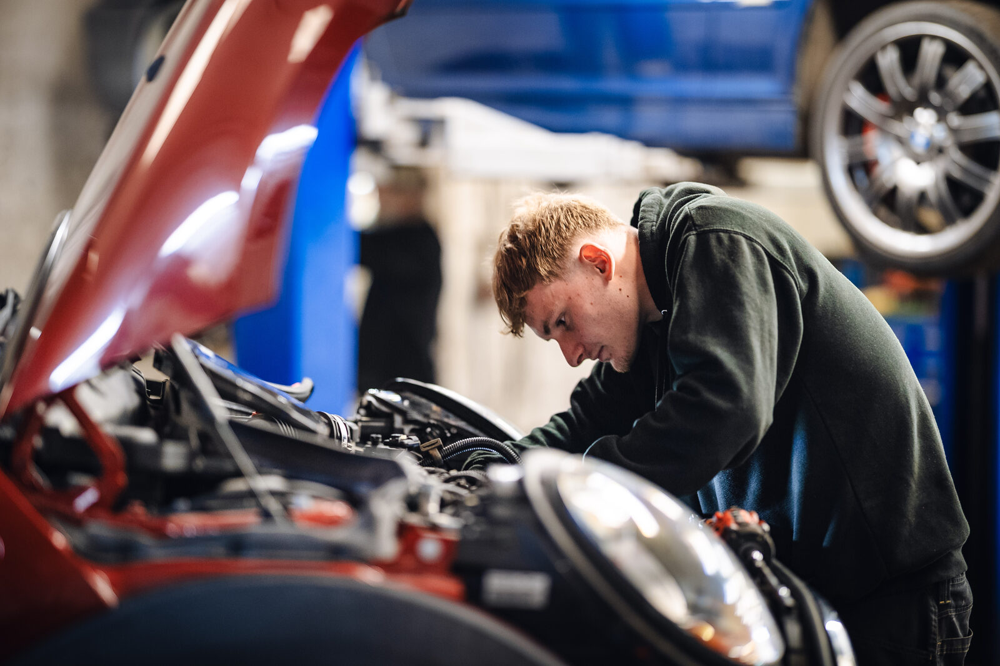

Expert Servicing for
Every Make and Model
Whether you drive a BMW, MINI or another make, you can rely on Bromspec MotorWorks for honest advice, quality workmanship and professional servicing from our workshop just outside Salisbury, near Lopcombe Corner.
Enjoy complete peace of mind knowing your car is in expert hands with no hidden extras, unnecessary repairs or inflated bills.
Whatever You Drive, We Have the Expertise.
At Bromspec MotorWorks, we service and maintain all makes and models. Our technicians have years of hands-on experience working on everything from everyday family cars to performance vehicles, using professional diagnostic equipment and manufacturer-level tools to ensure every vehicle receives the attention it deserves.
What sets us apart is our specialist BMW and MINI knowledge. We work on these vehicles every day and understand the standards required to keep them performing at their best. That experience benefits every customer who comes through our doors, regardless of what they drive.
We believe good service starts with clear communication. That's why you'll always have the opportunity to speak directly with the technician who worked on your vehicle, giving you a straightforward explanation of any work carried out and any recommendations for the future.
No unnecessary repairs. No confusing technical jargon. Just honest advice, quality workmanship and a service you can trust.

The Benefits of Keeping Your Car Serviced
A well-serviced car is a safer, more reliable and more economical car. Regular maintenance protects your investment and extends the life of your vehicle. It gives you confidence on every journey, whether you are commuting around Salisbury or heading further afield across Wiltshire and beyond.
The main benefits of servicing your car regularly include:
- Safety: A well-maintained car is safer to drive, protecting you, your passengers, and other drivers.
- Fuel efficiency: Regular servicing can improve your car's fuel efficiency, which can save you money on fuel.
- Lower operation costs: Servicing can make your car more efficient, which can reduce running costs.
- Avoid breakdowns: Faults that are fixed promptly can reduce the likelihood of your car breaking down.
- Resale potential: A full service history can help you maintain your car's resale value.
- Repair costs: Issues spotted earlier could cost less to repair.
- Peace of mind: Regular servicing can give you peace of mind knowing that your car is safe and won't break down.
- Vehicle lifespan: Regular servicing can extend the life of your engine.
Servicing Done the Bromspec Way
A service at Bromspec is more than a routine maintenance visit. It is part of a long-term commitment to keeping your car safe, efficient and performing exactly as it should for as long as you own it.
To make servicing as convenient as possible, we also offer courtesy cars for customers who prefer to leave their car with us for the day. Simply drop your car off in the morning, continue with your day uninterrupted, and return to collect it once the work is complete.*
*Subject to availability. You need to book the courtesy car in advance.
We provide:
- Expert on-site servicing for all makes and models, delivered by highly experienced technicians with specialist knowledge of BMW and MINI vehicles
- Manufacturer-level diagnostic equipment for accurate, thorough fault-finding
- High-quality parts and proven repair procedures used on every car
- Honest advice with no unnecessary work recommended and no upselling
- Direct communication with the technician who serviced your vehicle
- While-you-wait service appointments available, with courtesy cars on request
- Easy access location just outside Salisbury, no town-centre traffic or parking hassle
Everything Your Car Needs, Under One Roof
Regular servicing is only part of keeping your car running at its best. That's why we also offer MOT testing, advanced diagnostics and a full range of repair services, all from our workshop. Having everything under one roof means you can deal with a team that already knows your vehicle and its history.
If we spot anything during a service that needs attention, we'll talk you through it clearly and explain your options. No scare tactics or unnecessary work, just honest advice to help you avoid bigger problems and unexpected costs further down the line.
We also offer:
- On-site MOT Testing
- Advanced Diagnostics
- Remapping
- Air Con Servicing
- Wheel Alignment
Not Just BMW? We Can Help
While BMW and MINI are our speciality (and always will be), we also service and MOT all makes and models to the same high standards.
If you value expert workmanship, honest advice and a smooth experience, you'll feel right at home here.
A Garage Worth Travelling For
Our workshop is conveniently located just outside Salisbury near Lopcombe Corner, making Bromspec easily accessible from across Wiltshire and the surrounding areas.
Whether you are commuting to work, heading home or planning to wait while your vehicle is tested, our location avoids the stress of busy town-centre traffic and congestion.
If you prefer to leave your vehicle with us for the day, courtesy cars are available with advance booking so you can continue with your plans uninterrupted.
For responsible car owners looking for a genuine specialist garage near Salisbury, Bromspec offers the expertise, honesty and customer experience that local drivers travel for.
Book Your Appointment Today
Whether your vehicle is due a routine service or requires more in-depth maintenance, our team is ready to help. Call us today or book your appointment through our website and let our BMW specialists take care of the rest.